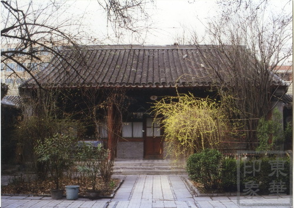
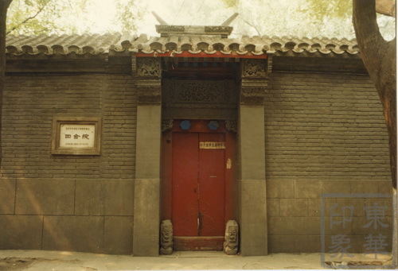
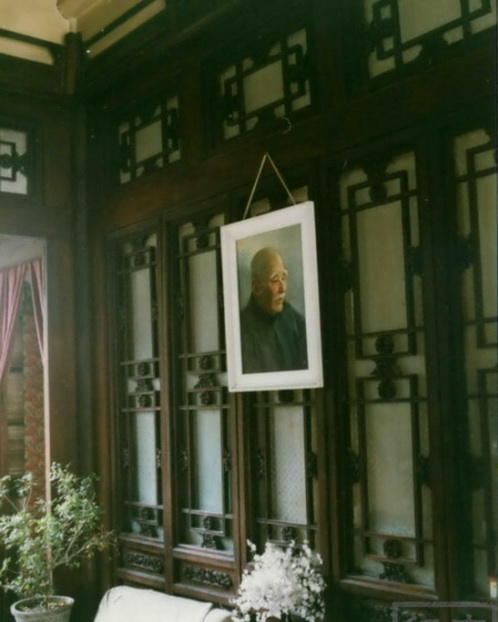

叶圣陶故居1

叶圣陶故居2

叶圣陶故居3
叶圣陶故居位于北京市东城区东四八条中部，东邻朝阳门北小街。该院建于清中后期，原为清内务府掌管帘子库官员的住宅。新中国成立后为叶圣陶先生的寓所。现为其家属所居。该宅院为三进四合院，坐北朝南。小如意门一间，硬山合瓦清水脊，门楣有精美的砖雕图案。门内有一字影壁，倒座房三间，门房两间，皆为硬山合瓦皮条脊。一进院北为一殿一卷式垂花门通二进院。二进院北房三间，前带廊，两侧各有耳房两间，东西厢房各三间，厢房南带耳房各一间；四周抄手游廊，廊子带有什锦窗。三进院有后罩房三间，西耳房两间，均为硬山合瓦清水脊。1986年1月21日该院公布为 北京市东城区文物保护单位。